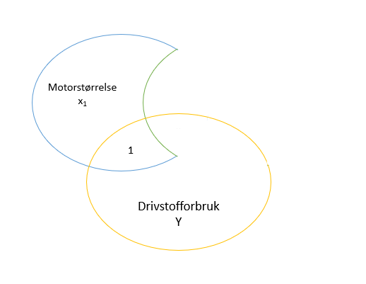
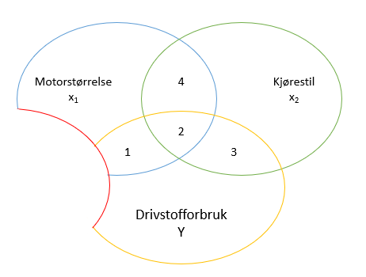

Regresjonsanalyse er et særtilfelle av variansanalyse, og er i følge Mehmetoglu & Mittner (2020) muligens en mest brukte analysemetoden for dataanalyse, eller arbeidshesten i foskning på økonomiske og sosiale forhold (Thrane, 2019). Det er først og fremst metodens er fleksibilitet som en hovedgrunn til dette.
En regresjonsanalyse er en statistisk analyse som undersøker sammenhengen mellom en kontinuerlig avhengig variabel og en eller flere kontinuerlige og/eller kategoriske uavhengige variabler. Selv om korrelasjon kan være veldig hjelpsomt å forstå vil en regresjonsanalyse søke å ta vår forståelse av sammenhengen litt videre, til for eksempel å forsøke å predikere nivået i en avhengig variabel ut fra nivået på den/de uavhengige variabler. Hvis vi lykkes med dette vil vi kunne klare å si noe om forventet verdi på et fenomen vi er interessert i ut fra kjente verdier på andre variabler. La oss anta at vi har variabler som beliggenhet (avstand fra sentrum), areal, etasje, solforhold, antall rom, antall bad, standard på bad og liknende for en leilighet kan vi bruke disse uavhengige variablene til å predikere en salgssum for denne boligen (som en avhengig variabel). Vi lager da en modell for dette forholdet - i dette tilfellet en regresjonsmodell. Vi går dermed fra å spørre om det er en sammenheng til å spørre hvilken sammenheng det er.
La oss forsøke å illustrere prinsippet med regresjonsanalyse gjennom er såkalt Venndiagram.

Den gule sirkelen illustrerer det forholdet vi er interessert i å “finne ut noe om”. Den representerer det vi kaller den avhengige variabelen - fordi det vi ønsker å finne ut er avhengig av andre forhold (andre variabler). Vi kan si at den gule sirkelen viser variasjonen i drivstofforbruket til alle biler vi har med i undersøkelsen vår, og vi betegner denne variabelen \(Y\). Biler har ulikt drivstofforbruk, så vi har altså en variasjon i drivstofforbruket mellom bilene. Den blå sirkelen viser variasjonen i motorstørrelse (vi kaller denne variabelen for \(x_1\)). Ulike biler har ulik motorstørrelse, og vi tenker at større motor betyr mer drivstofforbruk enn mindre motor. Den grønne sirkelen representerer en variabel vi har kalt kjørestil (\(x_2\)).
Vi har en hypotese om at vi kan predikere (forutsi) drifstofforbruket til en gitt bil ut fra motorstørrelse og kjørestil. Så det vi ønsker å se på er hvor mye av korrelasjonen mellom drivstofforbruk og motorstørrelse skyldes faktisk motorstørrelse, og hvor mye skyldes kjørestil. Vi tenker også at kjørestil og drivstofforbruk er korrelert (det er naturlig å tenke seg at personer med en aggresiv kjørestil har biler med større motorer - det er altså en korrelasjon mellom kjørestil og motorstørrelse). Vi ser dette i figuren under. Korrelasjonen mellom drivstofforbruk og motorstørrelse er gitt i områdene merket 1 og 2. Korrelasjonen mellom drivstofforbruk og kjørestil er gitt i områdene 2 og 3. Korrelasjonen mellom kjørestil og motorstørrelse er gitt i 2 og 4.

Området 2 viser den delte variasjonen mellom drivstofforbruk, motorstørrelse og kjørestil. Det vil innebære at vi kan bruke regresjonsanalsye til å isolere ut område 1 ved å se på motorstørrelsens totale korrelasjon med drivstofforbruk og trekke fra den delen av den totale korrelasjonen som deles med kjørestil (område 2). Da finner vi motorstørrelsens (\(x_1\)’s) unike bidrag. !

Det samme kan vi gjøre for kjørestil, der det unike bidraget utgjøres av område 3. Vi kan selvsagt ha flere prediktorer (uavhengige variabler) - noe vi veldig ofte vil ha. Det vi gjør er i prisnippet det samme: vi tar bort biter av korrelasjonen mellom motorstørrelse og drivstofforbruk som skyldes samvariasjon med andre variabler slik at vi får isolert den delen av korrelasjonen som utelukkende skyldes motorstørelse. Man kan tenke seg en ny variabel med rød sirkel. Igjen - regresjonsanalysen forsøker å isolere den unike delen for korrelasjonen mellom motorstørrelse og drivstofforbruk (og det samme for de andre variablene: den unike delen). Når vi klarer å isolere den unike korrelasjonen kan vi også si at vi har isolert den unike kausale effekten motorstørrelse har på drivstofforbruket (gitt at vi har inkludert alle relevant uavhengige variabler i modellen, noe vi i praksis sjelden vil klare).

Den videre innledningen til regresjonsanalyse tar utgangspunkt i eksempelet i Løvås (2013) (boka kom ut i 4. utgave i 2018). Illustrasjonene som er brukt er hentet fra bokas nettressurser. Løvås’ bok «Statistikk for universiteter og høgskoler» kan anbefales som introduksjonsbok til statistikk på universitets- og høgskolenivået. En annen bok som fungerer fint til dette formålet er Jan Ubøes “Statistikk for økonomifag” (vi har brukt 4. utgave, 2014 - 5. utgave kom i 2015) (Ubøe, 2014).